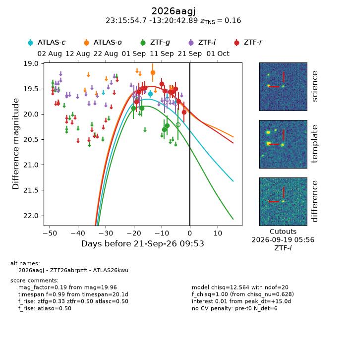
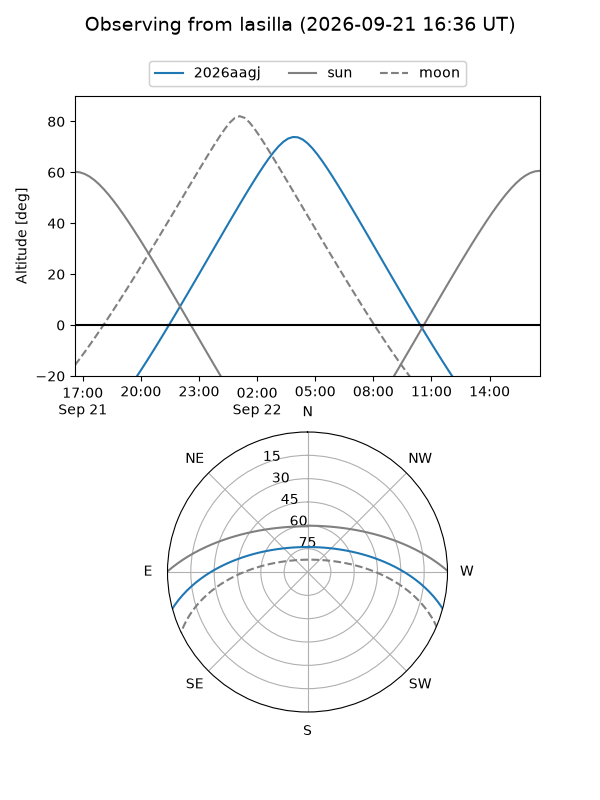
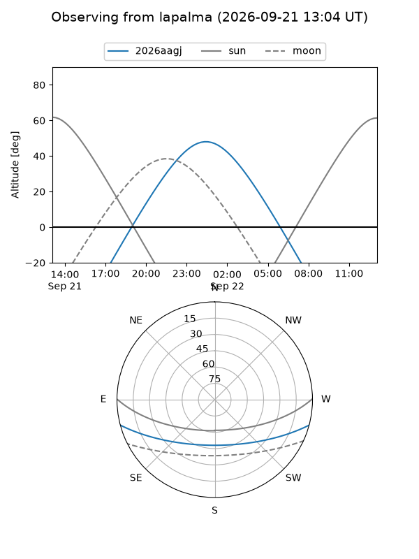
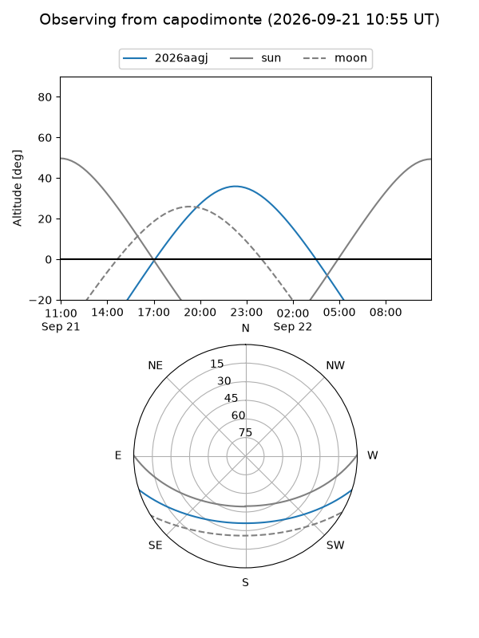
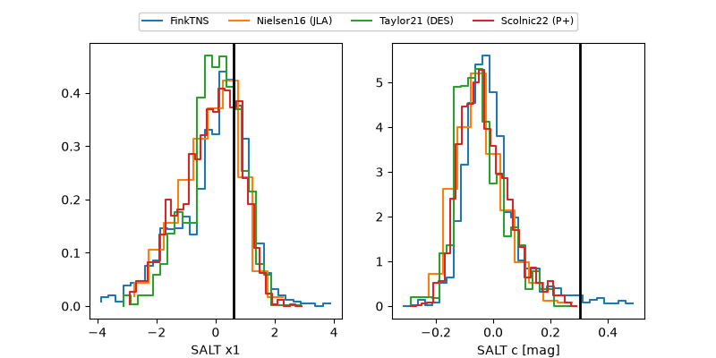

2026aagj
Target 2026aagj at 2026-09-21 09:55
Aliases and brokers:
FINK-ZTF: ztf.fink-portal.org/ZTF26abrpzft
Lasair-ZTF: lasair-ztf.lsst.ac.uk/objects/ZTF26abrpzft
ALeRCE-ZTF: alerce.online/object/ZTF26abrpzft
YSE-PZ: ziggy.ucolick.org/yse/transient_detail/2026aagj
TNS name: wis-tns.org/object/2026aagj
Direct TNS query: direct search
alt names
ZTF26abrpzft (ztf,fink_ztf)
2026aagj (tns,yse)
ATLAS26kwu (atlas)
Coordinates:
equatorial (ra, dec) = 348.9778,-13.34525
equatorial (HMS+DMS) = 23:15:54.68,-13:20:42.89
galactic (l, b) = (59.8799,-63.77493)
Flags:
TNS type: SN Ic-BL
TNS redshift: 0.1600
peak dt: +15.0
Photometry:
last atlasc=19.60, atlaso=19.18, ztfg=20.22, ztfr=19.96
1 atlasc, 1 atlaso, 4 ztfg, 11 ztfr detections
Lightcurve

Visibility



Additional plots
